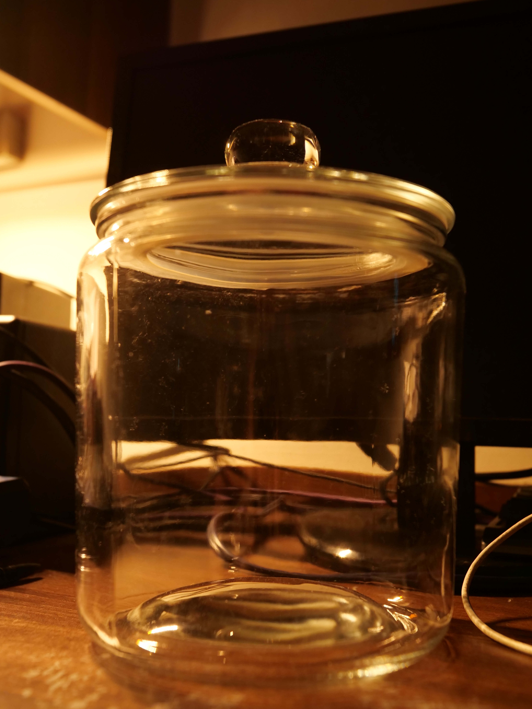

Terrarium
The Vessel
Vessel selection is a key determinate factor in the capabilities and conditions of an enclosed ecosystem. My chosen vessel is a 3.8 litre cookie jar - a silicone gasket provides an airtight seal to ensure humidity is retained and moisture re-circulation.

The Substrate
Substrate provides nutrients for plant life, habitat space for fauna, and storage for excess moisture. The terrium uses a three layer substrate consisting of drainage, charcoal, and organic matter layers.
Drainage
A fine chicken wire mesh supported atop a layer of small rocks and gravel provides a rservoir for drainage within the terrarium. Seperation of standing water from substrate is essential to the health of flora.
Organic Matter
The terrarium features an organics mixture of wetland soil, leaves, and small twigs. Microplastics are undesrable, but inevitably included.
The Flora
The terrarium is a high-humoidity environment. Locally available flora is best harvested from wetlands.
Moss
Humidity and oxygen regulation are critical mechanisms in an ecosystem. Moss performs both of these functions, thrives in humid environments, and requires little to no fertilisation - it is therefore well-suited for use in the terrarium.
The terrarium uses two moss varieties: sphagunum and pincushion. Each is visually distinct, providing variety to the ground cover.
The Fauna
Fauna are complimentary to the breakdown of decaying matter and re-intergration of nutrients into substrate.
Microfauna
Small accumulations of worm-like fauna appear to be forming inside condensation deposits on on the inside of the vessel. I am unsure whether these are flora or fauna.
Prey
The terrarium contains a community of isopods to accelerate the break down of organic matter and decaying plant life. A beetle also sometimes appears, though I have been unable to identify it's species.
Predators
There appear to be no predators inside the vessel. Isopod population appears stable, presumably maintained by access to nutrients.
The Décor
The terrarium features a lower basin and elevated plateau, defined by a large peice of charcoal.